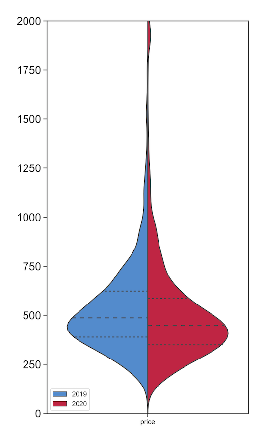
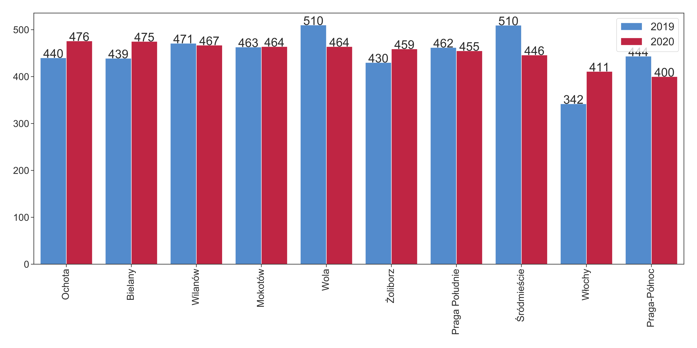

During the period of economic prosperity, purchasing real-estate for Airbnb rental has been a popular form of investment in major cities. Warsaw has been no exception, with strong economic incentives for short-term accommodation provision in recent years: Airbnb hosts benefited from the growing number of tourists, as well as from the rising flat prices.
These months a quick return of investment has become less secure. The market for short-term home rental, as well as the entire tourism sector has turned upside down. Tourists are trapped in their homes and cancelled reservations, while short-term rental even became prohibited for around a month (from the 31.03 to 04.05), with the exception of certain groups (business travellers, medical personnel and people under quarantine). As of today, the strictest restrictions are slowly lifted in many countries, but the chances of open borders, quick trips and cheap flights remain low.
In an exciting post (avaialble in Polish) Łukasz Nawaro showed that a considerable share of Airbnb hosts has already decided to pivot to the long-term rental market. We can also expect that more and more flats from Airbnb will re-appear on the real-estate market.
What was the state of the market at the end of March? We checked to what extent hosts adjusted their offers to the changing conditions. A previous experiment from 2019 was repeated between the 27-29 in March: using web-scraping, we collected offers for 2 persons for a stay in the period 17-19 in April. Our sample from 2019 concerns stays for the period 12-14 in April. The collected prices refer to the full cost of the accommodation, including the service and cleaning fees.
Did prices change with the dramatic shift in demand? Table 1. presents the number of the analysed offers, along with statistics on the price distribution. A decrease of prices can be observed: in relation to the previous year, the median price has decreased by 8%. Comparing the samples to each other (Figure 1), it can be also noted that the distribution of the 2020 prices (red) is shifted downwards in relation to the 2019 rates. The values of the first quartile (25% of offers has same or smaller price), median and third quartile are all lower. However, the average price has decreased by a lower extent due to the stronger presence of high-end offers (listings costing 2000 PLN for a weekend).
Tabel 1. Price statistics for offers in 2019 and 2020 (in PLN)
| Year | Number | 1st quartile | Median | 3rd quartile | Average |
|---|---|---|---|---|---|
| 2020 | 2748 | 350 | 448 | 587 | 513 |
| 2019 | 2387 | 389 | 487 | 623 | 531 |
Figure 1. Price distribution 
How did prices evolve in the various districts of Warsaw? Figure 2. introduces median prices in in the districts with at least 30 offers. The data suggests that a significant fall in prices occurred in the districts with the greatest density of Airbnb listings: City Centre (Śródmieście)- decrease by 13% and Wola – by 9%. On the other hand, in various districts prices did not change (Wilanów, Mokotów, Praga Południe) or even increased (Włochy).
Figure 2. Median prices in various districts 
What is the strategy of the different types of hosts? We checked the listings offered by hosts owning:
- 1
- 2 or 3
- at least 4 listings (“professional” hosts)
and calculated the median prices for 2019 and 2020. The numbers show that the corresponding decrease of prices was at the level of 5%, 6%, and 13%. This suggests that the professional hosts adjusted their offers to the greatest extent.
Finally, 798 offers available at both time periods were identified in our samples. In the case of 358 listings, prices decreased (in the case of 237 by more than 10%), while in the case of 438 prices increased (for 153 by more than 10%).
Conclusions
By the end of March, Airbnb rates decreased by around 8%. This change is primarily driven by professional hosts owning flats in the city centre. In the districts characterized by a lower density of Airbnb offers and lower share of professional hosts, prices have not changed yet. This may suggest that non-professional hosts reacted slower or turned to the long-term real estate market.
All signs point towards a significant fall in the revenues from short-term home rental. This may be the first year since 2015 with a falling number of Airbnb listings, potentially increasing the number of available flats for local residents.